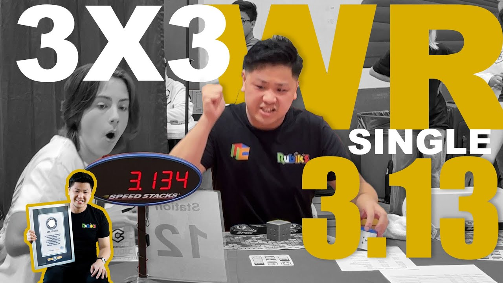

Au-delà de son aspect ludique, le Rubik's Cube présente de nombreux avantages cognitifs et sociaux :
Amélioration des capacités cognitives :Résoudre un Rubik's Cube nécessite de la logique, de la mémoire et de la visualisation spatiale.
Réduction du stress :Manipuler le cube peut être une activité apaisante pour beaucoup de personnes.
Développement personnel :Les joueurs apprennent la persévérance, la discipline et la stratégie face à un défi apparemment insurmontable.
Rassemblement communautaire :Le Rubik's Cube a créé une communauté mondiale de passionnés qui partagent des techniques, des compétitions et des records.
Scrambled
Championnats et Records
Le premier championnat officiel de Rubik's Cube a été organisé à Budapest en 1982, peu après le lancement international du cube. Le vainqueur, Minh Thai, un jeune Vietnamien vivant aux États-Unis, a réalisé un temps de 22,95 secondes.
Minh Thai - le premier recordiste mondial
Record mondial actuel (Single) : Le temps le plus rapide pour résoudre un cube 3x3 est de 3,13 secondes, réalisé par Max Park en 2023.

Max Park - La solution la plus rapide du Rubik's cube par un humain (3.13)
Record mondial actuel (Average) : La meilleure moyenne sur cinq résolutions (en excluant la plus rapide et la plus lente) appartient à Yiheng Wang, avec un temps de 4,05 secondes.